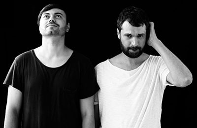

Livio & Roby - Nici Cu La EP on Memoria


Romania’s Livio & Roby are dance producers who have no hesitation in pointing to the inspiration of their national roots in their music. The story of Romania’s dance scene is one of overcoming obstacles - economic, social, political - to participate in a cultural movement that ultimately, if free of global boundaries. Described in their bio as “born from the weeping souls of their ancestors, men and women who lived through centuries of struggle, from the poverty of the Middle Ages to the Communist rule that only recently lost its grip on the nation”… like many of their country’s underground, the duo against the odds found a way to be a part of it.
Their Nici Cu La EP is a swift and sexy three-track offering. The cut EnDouble is smooth, stripped-back tech house record; the ambience begins to build as the track progresses, and while it’s largely free of melody, it’s by no means lacking in soul because of it.
The subsequent Lock steps up the energy with a throbbing bassline. While again it makes sparse use of production elements, it still brings enough of a hypnotic, percussive drive to hold the attention of the dancefloor right through the duration of its 8-minute running time.
The title track Nici Cu La is the weak spot on the EP, not reaching the same polished, seductive heights.
However, both EnDouble and Lock are worth the price of admission alone. Journeys into techy grooves that are essentially lowkey, they’re no less special because of that.
Title: Nici Cu La EP
Label: Memoria
TracklistNici Cu LaLockEnDouble
www.facebook.com/memoriarecordings
www.facebook.com/livioroby
Our rating: 8/10